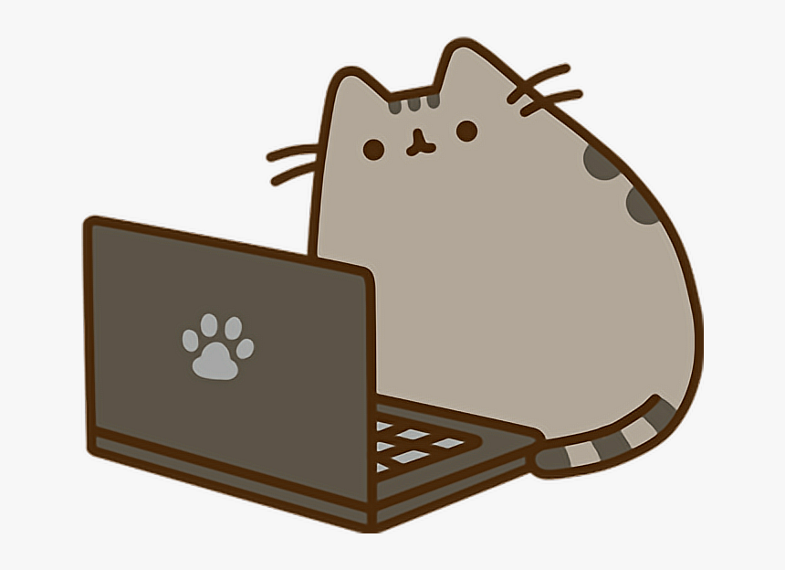

Koci Hotel
Nasz hotel znajduje się w spokojnej okolicy.
Dla naszych podopiecznych przeznaczone jest całe poddasze domu jednorodzinnego.
Koty mają do dyspozycji 8 w pełni wyposażonych, bezpiecznych boksów o powierzchni od 5 do 7 m²
oraz część wspólną, na którą są pojedynczo (lub w przypadku zgody i aprobaty poszczególnych właścicieli
-wspólnie) wypuszczane w celu wybiegania się).
Zapewniamy troskliwą, domową opiekę 24 godziny na dobę. Posiadamy odpowiednią wiedzę o kocich
potrzebach i zwyczajach.
Koci Hotel gwarantuje, że każdego kota, pozostawionego nam w opiece, otoczymy najlepszą
możliwą opieką, czule dbając o jego dobry nastrój, zdrowie, bezpieczeństwo oraz dobre i
higieniczne warunki pobytu.
